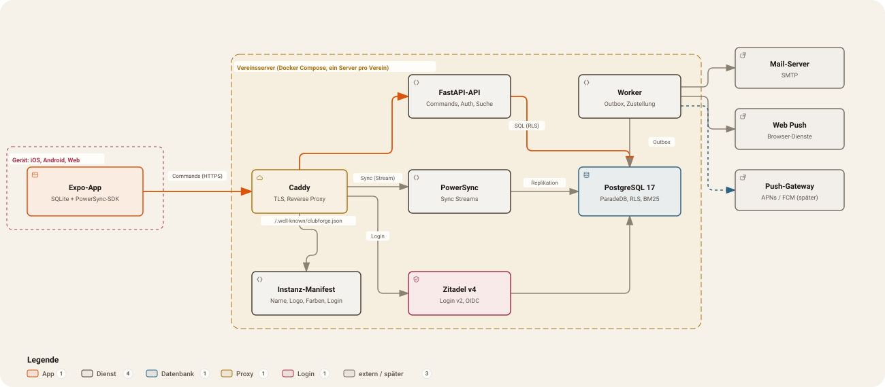

Operations: your server in one evening
A small server, three DNS names, one command: with the club name, logo, and colors, and the first admin at the end. The certificate comes from Let’s Encrypt automatically, backups are encrypted, and security updates run on their own.
# fresh server, Debian 12/13 or Ubuntu 24.04 curl -fsSLO https://cygnusb.github.io/clubforge-site/install.sh curl -fsSL https://cygnusb.github.io/clubforge-site/install.sh.sha256 sha256sum install.sh # compare the two checksums sudo bash install.sh \ --app app.mein-verein.example \ --sync sync.mein-verein.example \ --login login.mein-verein.example \ --email vorstand@mein-verein.example \ --club "Mein Verein" --version 0.2.0 \ --logo https://mein-verein.example/logo-weiss.svg \ --primary '#117733' --dark '#0a2a14' \ --admin-first Vera --admin-last Vorstand
The steps
Five steps. The server pulls a finished image and builds nothing; the first start (certificate, login service) takes a few minutes.
- 1Rent a server4 GB of memory. At Hetzner from about 5 € a month. For clubs in the EU, pick a location there. Clubs whose members are in the US can use Ashburn or Hillsboro (AMD cloud only; CAX11 is not available).
- 2Set three names
app.,sync., andlogin.on your domain point at the server’s IP address. - 3InstallInstaller over SSH, cloud-init, or an OpenTofu template for Hetzner, AWS, or Google Cloud.
- 4Create the first person
admin.shcreates the member and the login. The one-time password is changed at the first login. - 5Save the backup keyInto the club’s password manager, for two people. Without it, backups cannot be read.
What you need
A server
Linux (Debian 12/13 or Ubuntu 24.04), x86_64 or arm64, at least 2 vCPU and 4 GB RAM, 40 GB disk, a fixed IPv4 address.
A domain
You need to be able to set three records. The names are yours to choose, but they are fixed after install.
Open ports
22 (SSH), 80, and 443. Port 80 is what Let’s Encrypt uses to check the certificate.
Mail optional
An SMTP account for email notifications. Without it, the app and push still work.
Storage for copies optional
S3-compatible object storage (Hetzner, AWS, Google) for backup copies off the server.
Storage for attachments optional
A separate S3 bucket for photos, files, and GPX tracks, for example Hetzner Object Storage. Without it everything still runs, just without attachments. PDF previews are rendered by an isolated service with no network, on your server.
Room for maps optional
The map tiles for your region sit on the server: Baden-Württemberg about 1 GB, all of Germany about 7.4 GB. One command downloads them, and updates leave them alone; without them the app shows tracks as a line.
Member list optional
An API key for easyVerein, or a CSV file. Without one, you add members by hand.
A password manager
For the backup key and the .env, with access for two people.
What it costs
Rough figures, as of autumn 2026. Check prices with the provider before you order.
Hetzner Cloud
CAX11 or CX22: about 4 to 6 € a month. The main path. The small ARM server (CAX11) and the Intel server (CX22) run in Falkenstein, Nuremberg, and Helsinki. AMD cloud servers are also available in Ashburn (Virginia), Hillsboro (Oregon), and Singapore. Object Storage exists only in Germany and Finland, so a server in the US or Singapore still stores files and backups in an EU bucket, or the club uses AWS or GCS. For clubs in the EU, the European locations remain the recommendation. For clubs whose members are in the US, Ashburn or Hillsboro is the nearer choice: CAX11 is not available there (AMD types only), and US law applies. That is not “GDPR by default”. Included traffic is smaller outside the EU; check the current price list.
AWS
EC2 t4g.medium with an Elastic IP: about 25 to 35 € a month, Frankfurt region.
Google Cloud
e2-medium with a static IP: about 25 to 35 € a month, Frankfurt region.
Other
A domain is about 10 to 15 € a year. The certificate and the software cost nothing.
Tried on real hardware
Tested on real hardware, not only described.
Hetzner CAX11, 14 Oct 2026
2 vCPU arm64, 4 GB RAM, Ubuntu 24.04, Falkenstein, with the OpenTofu template and image 0.1.1 from Docker Hub. From tofu apply to a green check, about 2.5 minutes, real Let’s Encrypt certificates for all three names, no manual steps on the server.
Backup and restore test
Encrypted backup under 1 MB for a fresh club; the restore test passed in a throwaway container.
While running
About 1.3 of 3.8 GB of memory and 16% of a 40 GB disk in use.
Your own look
Tested with a fictional club: name, logos by URL, colors, and a custom word for groups came along with the install; the web app and the login page followed the club, and the first admin was there at once.
And after that?
Backups
Daily, encrypted, kept for 30 days, and optionally also in object storage. One command lets you test a restore.
Updates
System security updates run automatically. New clubforge versions with update.sh: backup, pull the new image, migration, check, way back. If you want, it announces the maintenance in the app beforehand; settings and map tiles stay.
Monitoring
check.sh checks DNS, the certificate, every endpoint, and the latest backup. Plus an external check and a backup heartbeat.
Privacy
A data processing agreement with the host, a server location in the EU when the club needs the GDPR, encrypted backups. Deletion requests and data exports come through the app; the server applies the periods itself. The guide has the checklist. US locations are a choice, not “GDPR by default”.
Settings in the club
Admins look after features, words, logo and colors, the code of conduct, and info pages in the app’s admin area, without touching the server.
Which app matches which server?
Each club updates its server on its own schedule, and the app is one app for everyone. Fixed rules keep that working together.
| Server version | Web app | Requires at least app |
|---|---|---|
| 0.2.0 | 0.2.0, served by your own server | 0.1.0 |
| 0.1.0, 0.1.1 | the same version, served by your own server | 0.1.0 |
- The web app is served by the server itself. It always has that version, so it always matches.
- The store apps (once they exist) support, from version 1.0, servers of their own major version and the previous one: app 2.x talks to servers 1.x and 2.x.
- Minimum version: each server names the oldest app it still works with. If an app is older, it shows “Please update the app” instead of working incorrectly. The minimum rises only when it really has to, not with every update.
- Before 1.0, things can still change between minor versions (0.1 → 0.2). Notes are with each version under Versions and in the update guide.
How it fits together
Reading always comes from the local database on the device. Changes go to the server as commands, and sync sends the result back to every device. All services run on the club’s server, from one shared image for every club; your own tools connect from outside through service accounts and webhooks.
